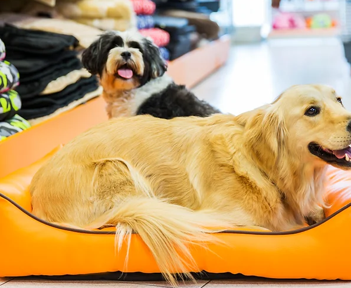

SOBRE A QUIPETS
Na Quipets, acreditamos que todo pet merece amor, cuidado e uma vida cheia de alegrias.
Foi essa paixão que nos motivou a criar um espaço dedicado a oferecer o melhor para os animais de estimação e seus donos.
Aqui você encontra produtos de qualidade, atendimento personalizado e serviços que garantem bem-estar, conforto e saúde para o seu amigo de quatro patas.
💜 Porque na Quipets, o seu pet é tratado como parte da família!

🕘 Horário de Funcionamento: Segunda a Sexta — 10h00 às 18h00 / Sábado — 10h00 às 16h00.
📍 Endereço: Rua Carambola Natal, N°121 — São Paulo/SP
💡 Venha nos visitar e descubra tudo o que preparamos para o seu pet!
ONDE NOS ENCONTRAR
📍 Onde Estamos:Rua Carambola Natal, N°121 — São Paulo/SP

🚀 Por que escolher a Quipets?
Atendimento humanizado e com amor pelos animais
Serviços realizados com segurança e produtos de alta qualidade
Transparência e honestidade em tudo o que fazemos
📲 Agende agora mesmo uma visita ou um horário para o seu pet e garanta um atendimento especial!
CLIQUE AQUI E FALE CONOSCO!
 Siga-nos no instagram! 💜
Siga-nos no instagram! 💜